Yellow = suggested by the quality gates, green = approved. Nothing is sent to Meshy until it is approved. Run from the repo root: python tools/nature/nature_pipeline.py approve <id>:vN
crystal-shard-cluster mesh - approved
small cluster of crystal shards: four short stubby hexagonal crystal shards of different sizes leaning outward from one point, the crystal is colourless with a dense milky white inside and a clear outer skin, glowing softly from within as if lit by a bright white light inside its core - brightest at the core, fading towards the clear edges - but the glow stays strictly inside the crystal: no halo, no bloom, no light rays, no light cast onto the background, crisp clean edges, no colour tint anywhere, no base or pedestal, the crystals rising straight out of an invisible ground
small cluster of crystal shards: four short stubby hexagonal crystal shards of different sizes leaning outward from one point, the crystal is colourless with a dense milky white inside and a clear outer skin, glowing softly from within as if lit by a bright white light inside its core - brightest at the core, fading towards the clear edges - but the glow stays strictly inside the crystal: no halo, no bloom, no light rays, no light cast onto the background, crisp clean edges, no colour tint anywhere, no base or pedestal, the crystals rising straight out of an invisible ground
crystal cluster: seven hexagonal crystals of very different lengths fanning out from one root, sharp pointed tips, one crystal broken off halfway, the crystal is colourless with a dense milky white inside and a clear outer skin, glowing softly from within as if lit by a bright white light inside its core - brightest at the core, fading towards the clear edges - but the glow stays strictly inside the crystal: no halo, no bloom, no light rays, no light cast onto the background, crisp clean edges, no colour tint anywhere, no base or pedestal, the crystals rising straight out of an invisible ground
split crystal geode: a rough rounded boulder of plain mid-grey stone cracked open on one side to reveal a hollow densely lined with crystals; the crystals are colourless with a dense milky white inside, glowing softly from within as if lit by a bright white light deep inside the hollow, the glow strictly inside the crystals - no halo, no bloom, no light rays, no light spilling onto the stone or the background - no colour tint anywhere, the stone shell a darker plain neutral grey that does not glow, so stone and crystal are clearly different in brightness
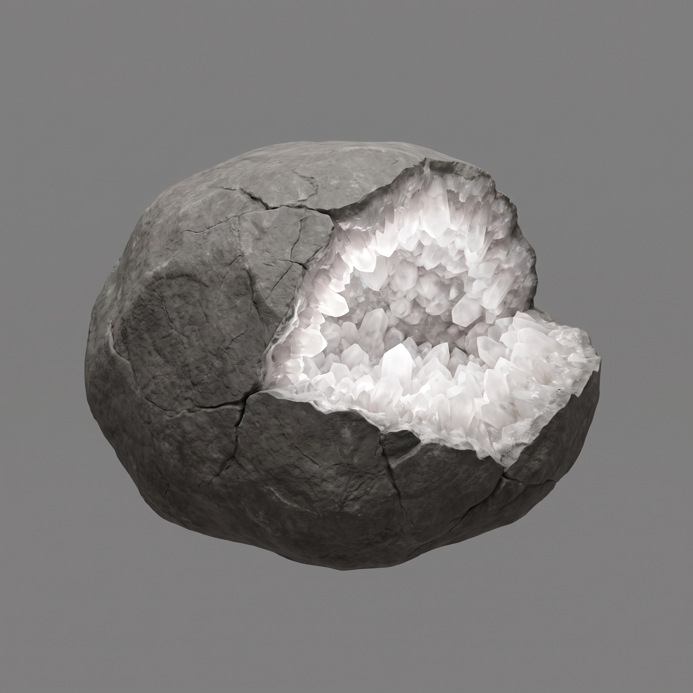
v1 ok, fills 46%approve crystal-geode:v1
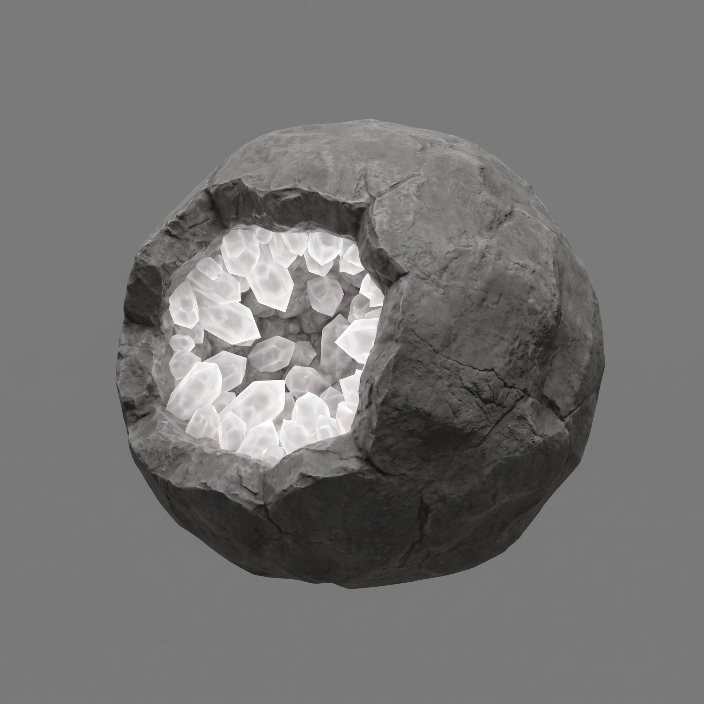
v2 ok, fills 46%approve crystal-geode:v2
reject crystal-geode
crystal-spire mesh - approved
tall crystal spire: one tall faceted crystal spire with a slight lean and a sharp tip, two smaller crystals growing from its foot, the crystal is colourless with a dense milky white inside and a clear outer skin, glowing softly from within as if lit by a bright white light inside its core - brightest at the core, fading towards the clear edges - but the glow stays strictly inside the crystal: no halo, no bloom, no light rays, no light cast onto the background, crisp clean edges, no colour tint anywhere, no base or pedestal, the crystals rising straight out of an invisible ground
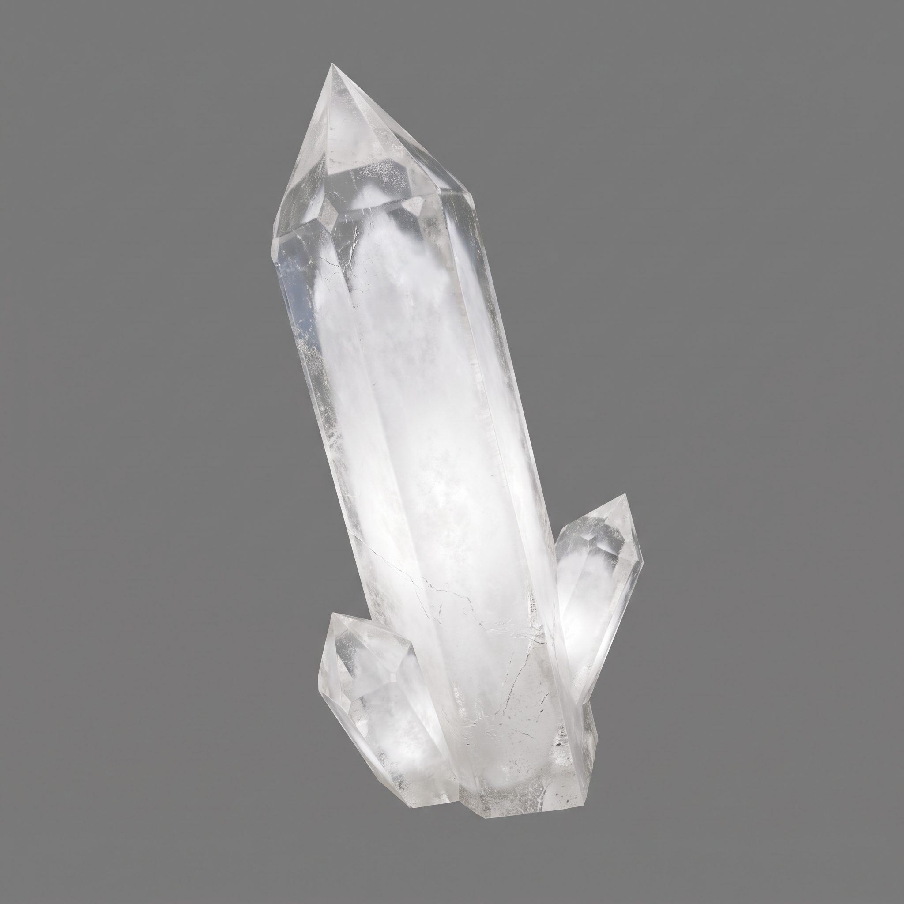
v1 APPROVED ok, fills 34%approve crystal-spire:v1
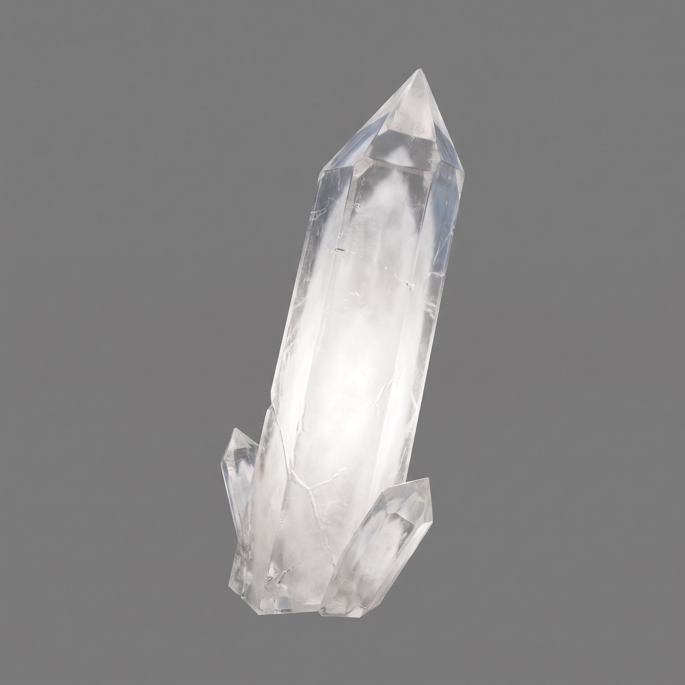
v2 ok, fills 28%approve crystal-spire:v2
reject crystal-spire
nature-white-wildflowers card - card
meadow wildflower clumps: Golden buttercups, amber marigold-like blooms and deep cornflower-blue flowers on short sage-green stems, five to nine flower heads per clump. No white or cream petals anywhere - every petal is a saturated gold, amber or deep blue
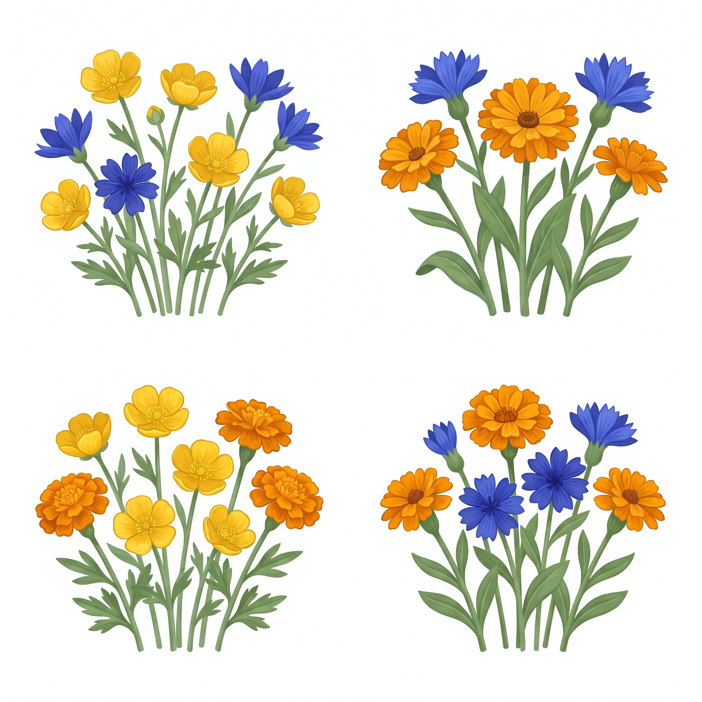
v1 okapprove nature-white-wildflowers:v1
reject nature-white-wildflowers
nature-white-tall-meadow card - card
tall golden meadow grass clumps with feathery seed plumes: Waist-high stalks of deep amber grass with heavy bronze seed plumes and one or two tall sunflower-like golden blooms in some clumps. No straw-white, no bleached tips
clipped boxwood hedge bush: a neatly trimmed rounded-cube shrub of dense small sage-green leaves, neatly clipped into a rounded block by a gardener, a few short woody stems visible at the base
flowering sunbloom shrub: a round airy shrub of sage-green leaf clusters dotted with small saturated golden five-petal flowers, slightly lopsided natural shape
slender silver birch tree: a tall straight trunk of white bark with dark horizontal markings, splitting into two upper limbs that carry three or four separate leafy canopy clusters of pale golden-green leaves
gnarled olive-like sunleaf tree: a short twisted grey trunk that splits low into three crooked limbs, carrying a wide flat-topped silvery sage canopy broken into leafy clumps, a few tiny golden fruits
lone majestic sun oak: a massive solitary oak with a broad buttressed trunk and a huge dome canopy of warm golden leaves built from large leafy clusters, sunlight-coloured, the kind of tree that marks a crossroads on open plains
cluster of flat limestone stones: four or five flat, rounded pale limestone stones of different sizes lying together, sun-bleached cream with faint grey speckle
layered limestone outcrop: stacked flat-topped slabs of pale cream limestone stepping down to one side, clean horizontal strata, small tufts of moss in the seams
cluster of puffball mushrooms: five round cream puffball mushrooms of different sizes with soft golden-brown speckles, one split open at the top
reject nature-white-puffball-cluster
nature-blue-sea-lavender card - card
sea lavender and sea holly clumps: Low clumps of spiky steel-blue sea holly and sprays of deep violet sea lavender on dark teal stems. No pale mint, no frosted tips
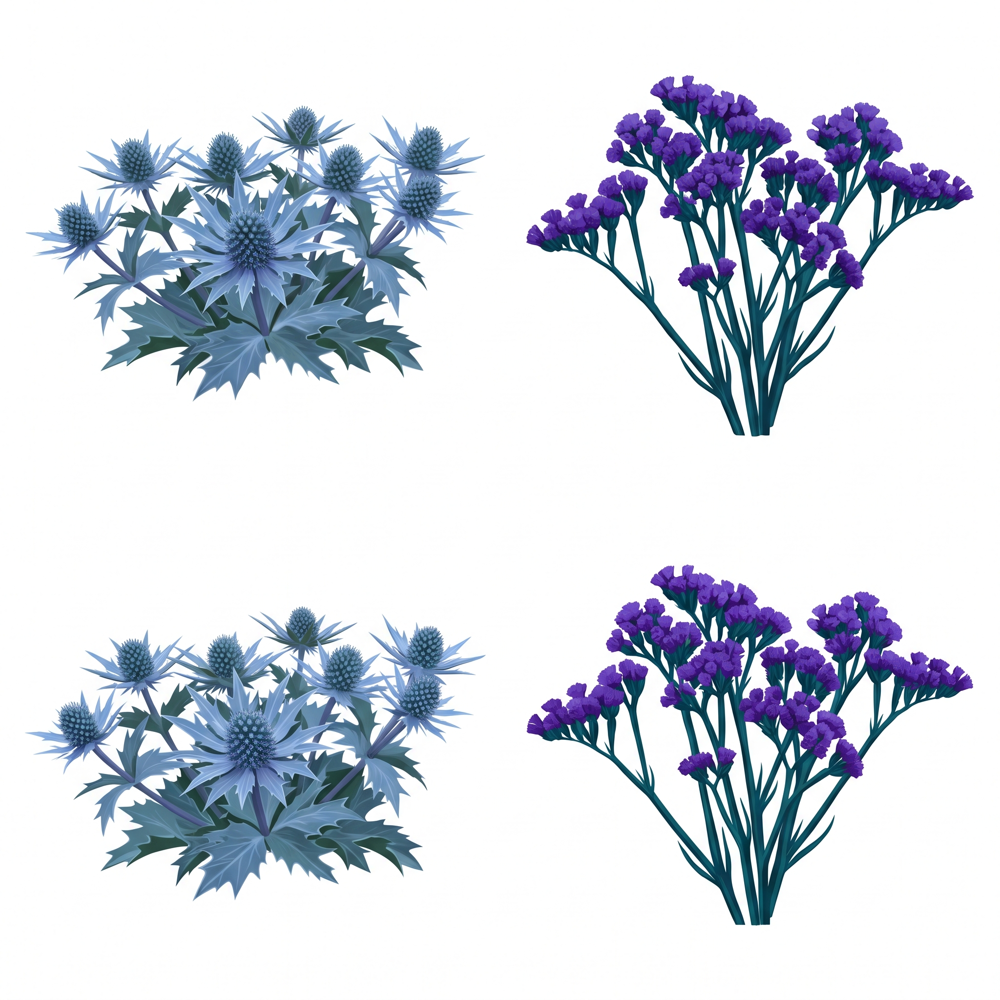
v1 okapprove nature-blue-sea-lavender:v1
reject nature-blue-sea-lavender
nature-blue-dune-reeds card - card
tall coastal dune reed clumps: Stiff upright deep teal reeds with dark blue-green seed spikes, bent slightly by wind, all leaning the same way
tide hydrangea shrub: a rounded shrub of broad dark-teal leaves crowned by large ball-shaped clusters of deep blue flowers, each cluster a dense round puff
windswept coastal pine: a trunk bent hard to one side by sea wind, branches all reaching the same way, needles grouped into flat layered dark blue-green canopy pads like a giant bonsai
mangrove tree on arching stilt roots: a short trunk lifted off the ground on a cage of arching stilt roots, a compact dome canopy of glossy dark-teal leaves, barnacles and pale tide marks on the lower roots
sea stack rock arch: a tall eroded column of layered blue-grey rock with a natural arch worn through its base, wet salt-stained ledges and a few barnacle patches near the bottom, bare rock only
reject nature-blue-sea-stack-arch
nature-blue-beach-pebbles mesh - approved
cluster of smooth beach pebbles: six smooth rounded pebbles in blue-grey, slate and sand tones, one flat skipping stone on top
low hexagonal basalt column formation: a tight group of hexagonal stone columns of different heights forming natural stepping platforms, wet blue-grey stone with pale salt rings
nightshade clumps: Low clumps of dark olive leaves with drooping star-shaped deep violet flowers and a few glossy black berries. Dark values, but keep violet and olive readable
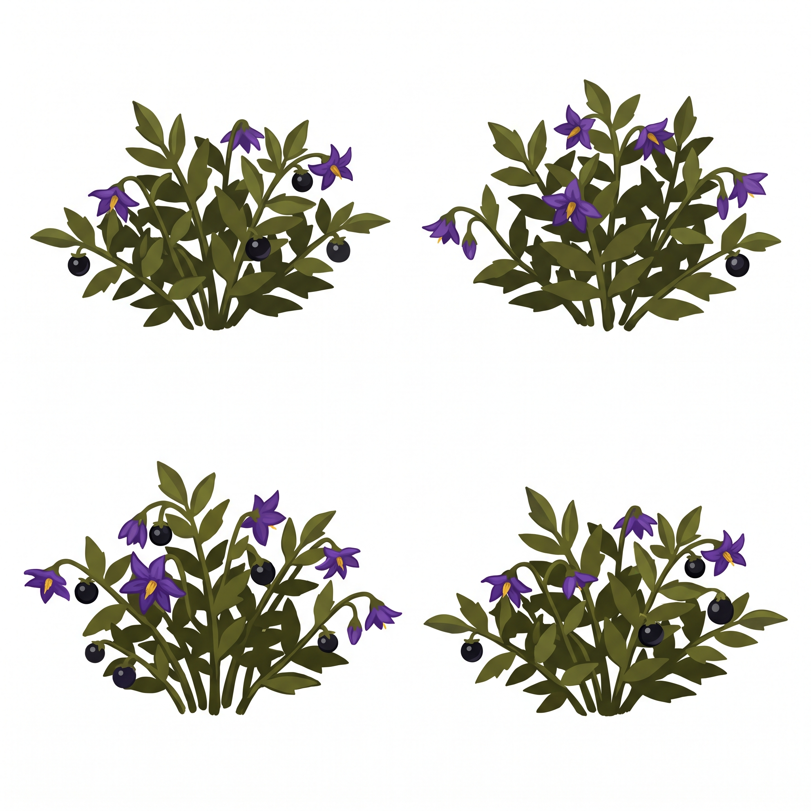
v1 okapprove nature-black-nightshade:v1
reject nature-black-nightshade
nature-black-bog-cattails card - card
bog cattail reed clumps: Tall dark olive reed blades, some broken and drooping, with thick dark brown cattail heads on stiff stalks
drooping swamp willow: a twisted leaning trunk with a hollow, its canopy a heavy curtain of long hanging dark-olive leaf strands grouped into long drapes that almost touch the ground
swamp cypress with knees: a flared buttressed trunk standing in a ring of knobbly cypress knees, a sparse ragged canopy of dark needles, long strands of grey hanging moss draped from the branches
reject nature-black-swamp-cypress
nature-black-dead-snag mesh - awaiting approval
leaning dead snag tree: a leafless dead tree leaning at an angle, peeling grey-black bark, a few long spiky bare branches, a split near the top
reject nature-black-dead-snag
nature-black-slate-shards mesh - approved
cluster of wet slate shards: four thin flaky shards of wet black slate tilted against each other, faint violet sheen, a little dark moss at the base
cluster of tall witch toadstools: five spindly toadstools of different heights with pointed deep violet caps, pale bone stems and faintly glowing lilac gills
reject nature-black-witch-toadstools
nature-black-bracket-log mesh - approved
rotten log covered in bracket fungus: a short rotting log, bark sloughing off, covered in rows of stacked shelf fungus in olive, bone and dark violet
cluster of giant swamp spore pods: four bulbous swollen fungal pods on thick stalks, mottled aubergine skin with glowing violet pores, one pod split open
reject nature-black-spore-pods
nature-black-bog-lilies mesh - approved
floating cluster of bog lily pads: five flat round dark-olive lily pads lying flat, each with a notch, two closed deep violet lily buds, completely flat underside
ember flower clumps: Low clumps of dark charcoal-green leaves with flame-shaped blossoms in saturated orange and crimson, petals curling upward like little fires
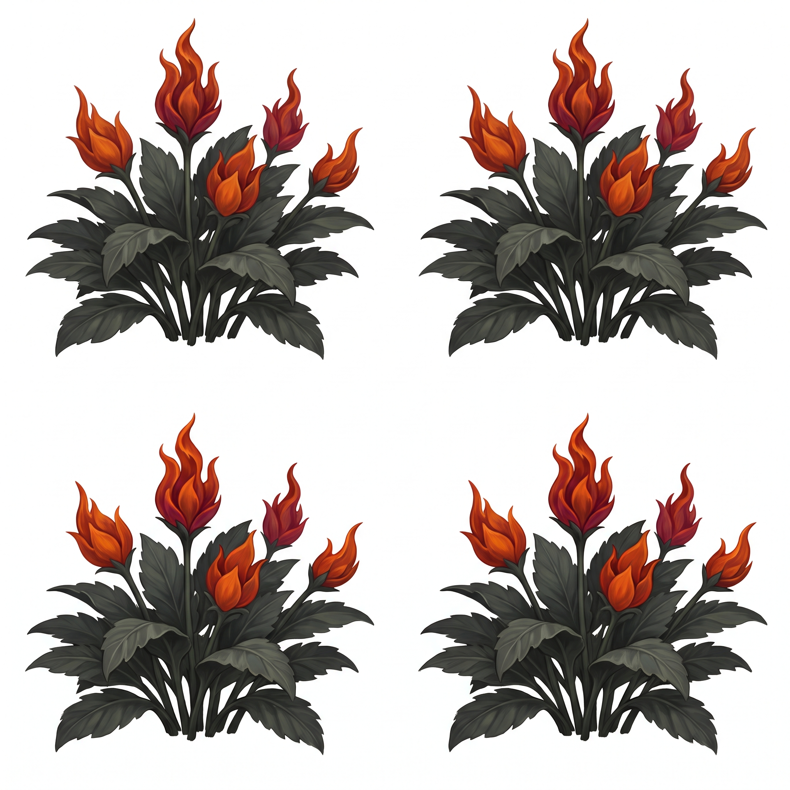
v1 okapprove nature-red-ember-flowers:v1
reject nature-red-ember-flowers
nature-red-scorched-reeds card - card
tall scorched spike-reed clumps: Stiff rust-red spiky reeds with blackened burnt tips and a few dark crimson seed spikes. No pink, no salmon
fire succulent rosette: an agave-like rosette of thick pointed fleshy leaves, crimson at the tips fading to dark rust at the base, one tall flower stalk with an orange bloom
dragonblood tree: a thick trunk splitting into a dense fan of upward branches, topped by a broad flat umbrella canopy of stiff dark leaves, dark crimson sap streaks running down the bark
charred pine tree: a tall fire-blackened pine with most needles gone, a few clumps of rust-brown needles left near the top, cracked bark showing glowing ember-orange seams
ancient fireheart tree: a huge twisted tree of black bark split by molten orange veins, a wide canopy of flame-orange and crimson leaf clumps, roots gripping cooled lava rock
cooled pillow lava mound: a low mound of rounded cooled lava blobs piled together, black crust with faint glowing orange cracks between the blobs
reject nature-red-pillow-lava
nature-red-sandstone-mesa mesh - approved
red sandstone mesa chunk: a flat-topped block of layered red and ochre sandstone with crisp horizontal strata, one corner collapsed into a pile of fallen slabs
ember cap mushrooms on charred wood: a short chunk of charred black wood with six flat orange mushroom caps growing from it, the caps glowing like embers along their rims
reject nature-red-ember-caps
nature-red-sulfur-vent mesh - awaiting approval
sulphur vent rock: a low cracked rock mound with an open vent hole at the top, crusted with bright sulphur-yellow and white mineral deposits around the opening
reject nature-red-sulfur-vent
nature-green-clover-flowers card - card
clover and woodland flower clumps: Low clumps of deep green clover leaves with small saturated violet, magenta and yellow woodland flowers. No pale or white petals
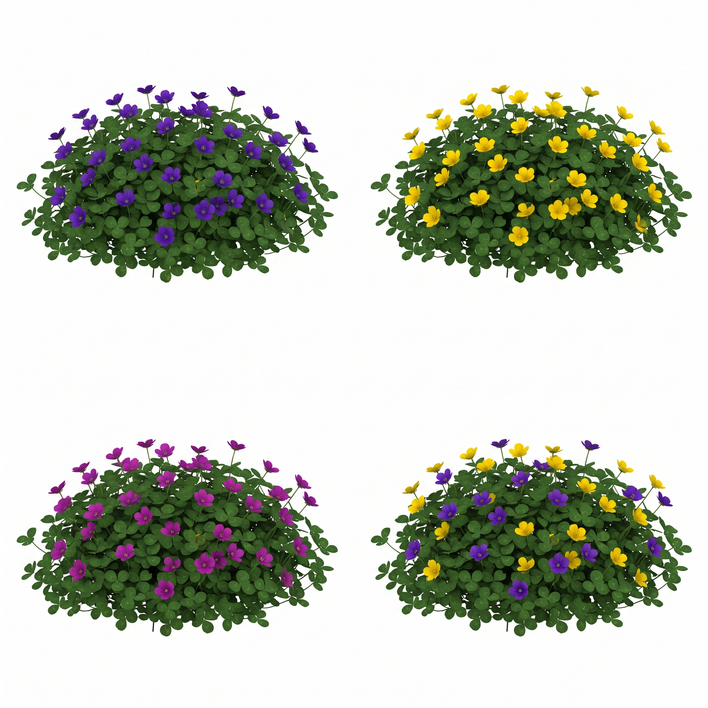
v1 okapprove nature-green-clover-flowers:v1
reject nature-green-clover-flowers
nature-green-ferns card - card
forest fern clumps: Arching fern fronds in deep saturated green, each frond broad with clearly separated chunky leaflets, five to eight fronds per clump
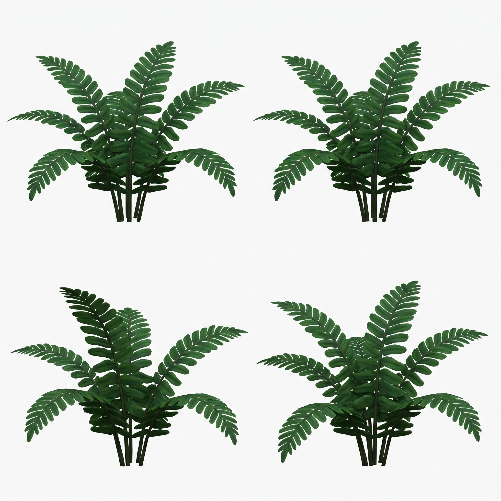
v1 okapprove nature-green-ferns:v1
reject nature-green-ferns
nature-green-round-bush mesh - awaiting approval
round leafy forest bush: a full rounded bush built from several overlapping dense leaf clusters in deep and mid greens, a few twigs poking out
broad forest oak: a thick mossy trunk with exposed roots, heavy spreading branches carrying a wide canopy of large dense leaf clusters in deep and mid greens
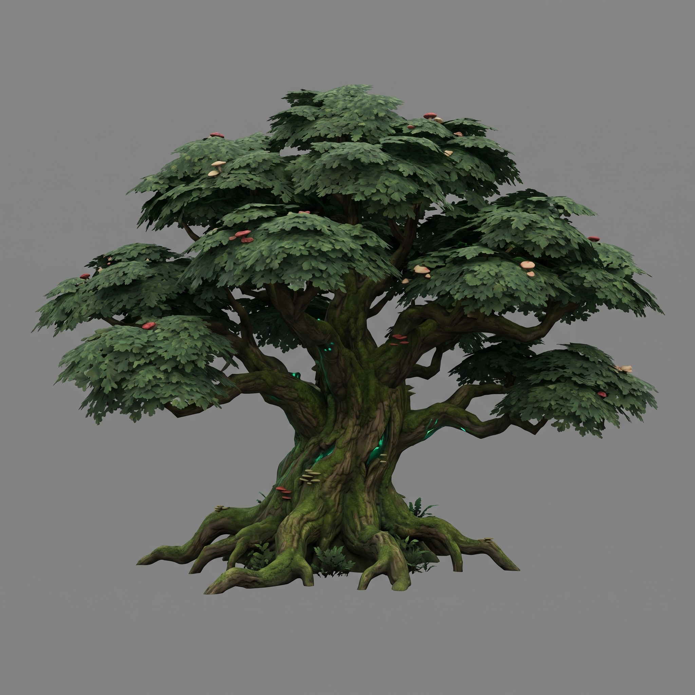
v1 ok, fills 65%approve nature-green-broad-oak:v1
reject nature-green-broad-oak
nature-green-tall-fir mesh - awaiting approval
tall forest fir: a straight trunk with tiers of drooping layered branches forming a narrow cone of dark blue-green needles, each tier a distinct layer
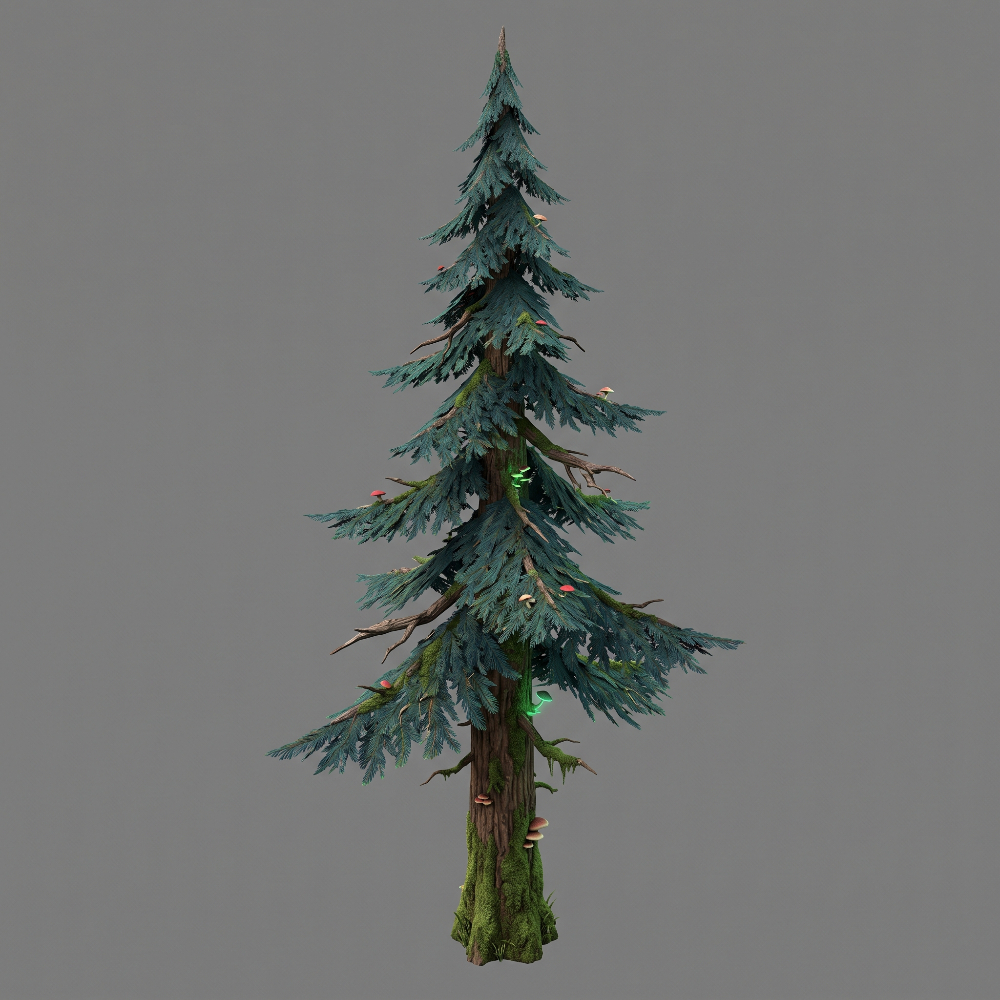
v1 ok, fills 42%approve nature-green-tall-fir:v1
reject nature-green-tall-fir
nature-green-sapling mesh - awaiting approval
young forest sapling: a thin young tree with a slightly crooked stem and two small leaf clusters in fresh deep green
root-bound boulder: a large grey boulder gripped by thick twisting tree roots that wrap over it and dive into the ground on both sides, moss in the crevices
cluster of red-capped toadstools: five toadstools with round red caps dotted with cream spots and thick cream stems, different heights, one tipped over
reject nature-green-toadstool-cluster
nature-green-giant-mushroom mesh - approved
giant forest mushroom: a towering mushroom with a thick curved pale stem and a broad cream-and-moss-green cap, smaller mushrooms around its foot, softly glowing green gills under the cap
mossy tree stump: an old cut tree stump with visible growth rings on top, thick moss over one side, roots spreading at the base and two small mushrooms